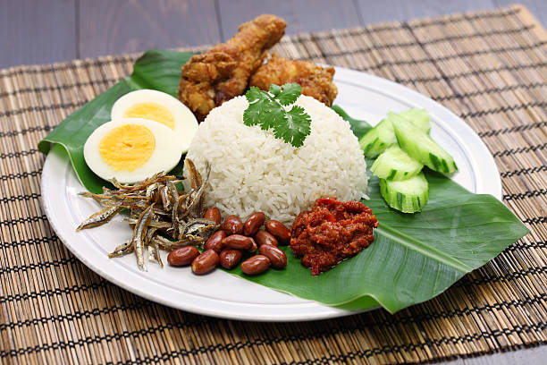

Nasi Lemak

Description
This Is Nasi Lemak. It is one of the most popular food in Malaysia. Everyone
love Nasi Lemak. Nasi Lemak Best!
Main ingredients of Nasi Lemak is rice, coconut milk, ginger, anchovies, boiled eggs and cucumber.
Everyone has their own personal favourite nasi lemak recipe.
Ingredients
- Long rice
- Coconut Milk
- Ginger
Steps
- Gather all ingredients.
- Make the rice: Stir coconut milk, water, rice, fresh ginger, ground ginger, bay leaf, and salt together in a medium saucepan.
- Cover and bring to a boil over medium heat. Reduce the heat and simmer until tender, 20 to 30 minutes. Discard bay leaf and keep rice warm until garnish and sauce are ready.
- While the rice is cooking, make the garnish: Heat 1 cup vegetable oil in a large skillet over medium-high heat. Stir in peanuts and cook briefly, until lightly browned. Remove peanuts with a slotted spoon and place onto paper towels to soak up excess grease.